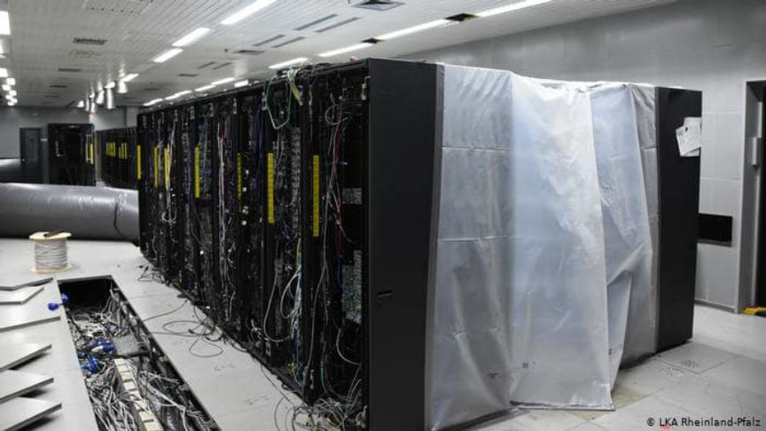
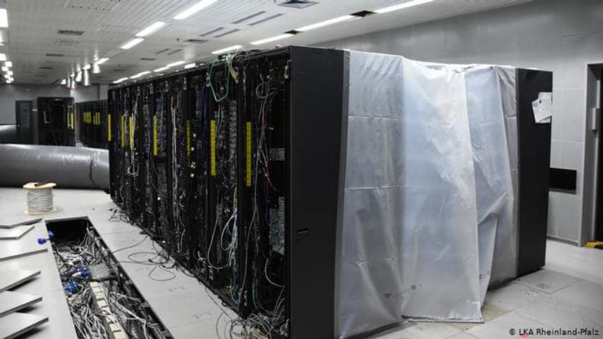

The Cyberbunker Trial Began This Week
~2 min read | Published on 2020-10-26, tagged General-News using 277 words.
The Cyberbunker trial began this week. Eight defendants are facing charges for “aiding and abetting criminals in some 249,000 illegal online transactions involving drugs, contract killings, money laundering and images of child abuse worth millions of euros.”

Prosecutors accuse the defendants of selling so-called “bulletproof hosting” services to criminals. Initially, Cyberbunker advertised hosting for anything except “child pornography and anything related to terrorism.” The defense attorneys will argue that their clients were unaware of the contents of the physical servers inside the bunker.
Steven Murdoch, an expert in security engineering at University College London, said that internet hosting providers might not know the intentions of their customers.
“The principle that organizations are not responsible for their customers is a good one, and quite widely held,” said Murdoch. “As soon as you are a large organization, there will be terrible people using your services. So the question is — what proportion of your customers are terrible people?” Murdoch explained that the proportion was an important element; Amazon, for example, likely hosts millions of illegal services. But those services are likely a very small percent of the content hosted by Amazon. Prosecutors claimed that everything hosted on Cyberbunker servers was either illicit or related to illicit activity.
The public prosecutor said the case will break “new legal ground.” Even if the prosecution can prove that the Cyberbunker employees knew about the illegal activities facilitated by their servers, they also have to prove that an internet service provider has to act on this knowledge.
The trial is scheduled to last until December 2021 at the earliest.

Cyberbunker owned hundreds of physical servers
Prosecutors accuse the defendants of selling so-called “bulletproof hosting” services to criminals. Initially, Cyberbunker advertised hosting for anything except “child pornography and anything related to terrorism.” The defense attorneys will argue that their clients were unaware of the contents of the physical servers inside the bunker.
Everybody wore masks in the packed courtroom.
Steven Murdoch, an expert in security engineering at University College London, said that internet hosting providers might not know the intentions of their customers.
“The principle that organizations are not responsible for their customers is a good one, and quite widely held,” said Murdoch. “As soon as you are a large organization, there will be terrible people using your services. So the question is — what proportion of your customers are terrible people?” Murdoch explained that the proportion was an important element; Amazon, for example, likely hosts millions of illegal services. But those services are likely a very small percent of the content hosted by Amazon. Prosecutors claimed that everything hosted on Cyberbunker servers was either illicit or related to illicit activity.
Law Enforcement replaced Cyberbunker sites with a seizure banner.
The public prosecutor said the case will break “new legal ground.” Even if the prosecution can prove that the Cyberbunker employees knew about the illegal activities facilitated by their servers, they also have to prove that an internet service provider has to act on this knowledge.
The trial is scheduled to last until December 2021 at the earliest.